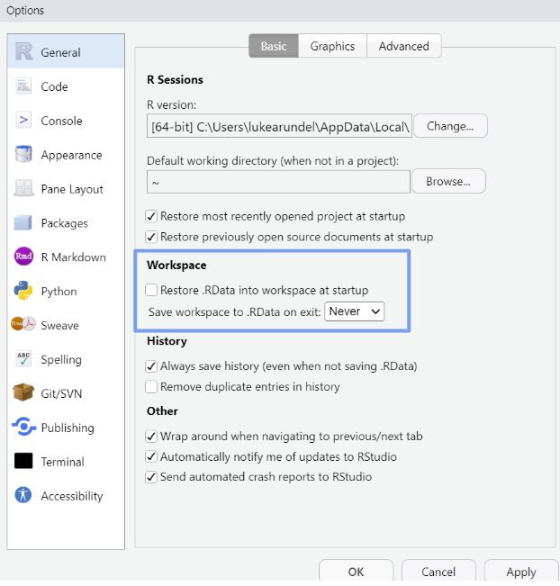

Best practice tips
- Use commented lines of
-to help break up the script into readable sections
# Loading libraries and data --------------------------------------------------
# Load libraries (install if needed)
library(tidyverse)
# Load data
df <- read.csv("example_data_vis.csv")
# Tidying the data ------------------------------------------------------------
# Filter by year
df <- df %>%
filter(enrollment_year == 2020)
# Separating a full name into first and last name
df_separated <- df %>% separate(col = FullName,
into = c("FirstName", "LastName"),
sep = " ")- Include a line on who wrote the script, and and a line or two on what its purpose is
# Open University Learner Analytics Data (OULAD) ------------------------------
# 1. OULAD loading and cleaning -----------------------------------------------
# Introduction ----------------------------------------------------------------
# Ongoing document written by LA with support from RJS.
# Analyses the Open University Learner Analytics Dataset.
# Info on this open dataset and the data can be found here:
# https://analyse.kmi.open.ac.uk/open_datasetLoad all required packages, then all required files. Only load the packages that are necessary for your script.
Where possible, use the
tidyverserather than Base R. The tidyverse has friendly syntax and is often easier to read than Base R.1
- Comment liberally, explaining what your code is doing and why.
# Creating binary deprivation measure
# Where bottom three deciles are coded as deprived
student_info <- student_info %>%
mutate(deprivation_status = case_when(
is.na(imd_decile) ~ NA_character_,
imd_decile %in% 1:3 ~ "Deprived",
TRUE ~ "Not deprived"
))
# student_info has more than one row for many students, who are taking more than one module
# So we can keep unique id_student to perform a lookup
student_info_unique <- student_info %>%
distinct(id_student, .keep_all = TRUE)Try to keep the code to 80 characters or less per line for readability.
If the script is unwieldy, consider breaking the code up into separate files (as a rule of thumb a file shouldn’t be longer than 2000 lines).
If files should be run in a certain order, begin the file name with numbers (e.g.
1_tidy_data,2_exploratory_analysis,3_model)Use
<-not=for assignment.Try not to repeat yourself - if you’re repeating the same code many times, consider using a loop or function, which will save time and decrease the likelihood of making a mistake.
Aim for names (both for files and variables) that are concise and meaningful.
- Bad practice:
data_analysis_version2_final.Rnew_script_updated.Rfinal_data_03.04.2024.R
- Good practice:
student_performance_analysis.Rcourse_enrollment_trends.Rfaculty_publication_summary.R
- Bad practice:
Try to avoid modifying raw data. If you modify data manually you might make errors, and won’t be able to restore the original version. Making edits with code enables you to keep track of all the steps you have taken.
Start with a clean environment - do not save the workspace (which is turned on by default). Go to Tools -> ‘Global Options’, then select ‘Never’ for ‘Save workspace to .RData on exit’. 
Footnotes
There is debate around this. However this discussion is beyond the scope of this guide. All that we need to know for the purposes of this guide is that the tidyverse is a collection of packages designed to work together in data science tasks. It simplifies data manipulation, visualisation and analysis through a consistent syntax and logical workflow. For all things tidyverse, see R for Data Science.↩︎